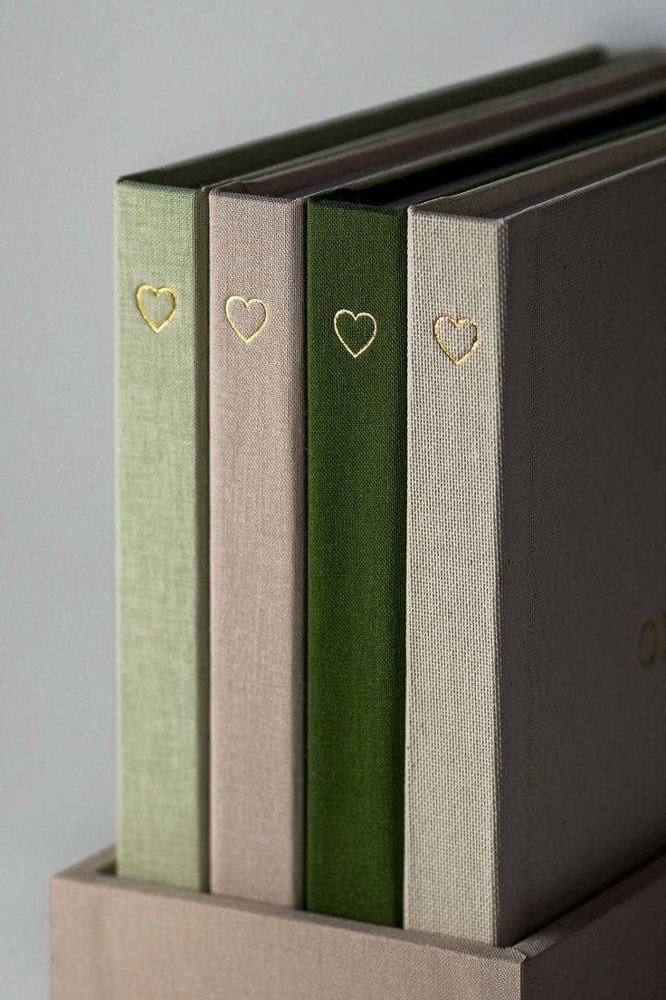

5 Tips for Choosing the Perfect Stationery
Posted on May 18, 2024
Choosing the perfect stationery can be a daunting task, but these five tips will help you make the right choice...
1. Determine Your Needs
Before you start shopping for stationery, think about what you'll be using it for. Are you looking for daily use items like pens and notebooks, or do you need something more specialized like calligraphy supplies? Understanding your needs will help narrow down your choices.
2. Consider the Quality
Quality is key when it comes to stationery. High-quality paper and writing instruments can enhance your writing experience and make your work look more professional. Look for brands that are known for their quality products.
3. Choose a Style
Stationery comes in a variety of styles, from minimalist to ornate. Choose a style that reflects your personality and makes you excited to use your supplies. Whether you prefer classic, modern, or whimsical designs, there's something out there for everyone.
4. Think About Sustainability
With growing awareness of environmental issues, many people are looking for eco-friendly stationery options. Consider products made from recycled materials or those that can be recycled after use. Some brands also offer refillable pens and pencils to reduce waste.
5. Test Before You Buy
If possible, try out stationery items before purchasing them. This is especially important for pens and markers, as the feel and flow of the ink can vary significantly between brands. Many stores have sample stations where you can test products.
By following these tips, you can find the perfect stationery that meets your needs and matches your style. Happy shopping!